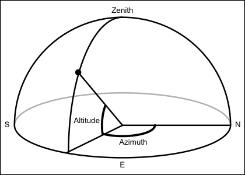

This calculates solar angle, based on a NASA-provided Fortran program, which (according to comments in the code) is in turn based on "The Astronomical Almanac".
sunAngle(t, longitude = 0, latitude = 0, useRefraction = FALSE)
| t | time, a POSIXt object (converted to timezone |
|---|---|
| longitude | observer longitude in degrees east. |
| latitude | observer latitude in degrees north. |
| useRefraction | boolean, set to |
A list containing the following:
time the time
azimuth, in degrees eastward of north, from 0 to 360.
altitude, in degrees above the horizon, ranging from -90 to 90.
diameter, solar diameter, in degrees.
distance to sun, in astronomical units.
declination angle in degrees, computed with sunDeclinationRightAscension().
rightAscension angle in degrees, computed with sunDeclinationRightAscension().

Regarding declination and rightAscension, see
references in the documentation for sunDeclinationRightAscension().
The other items are based on Fortran code retrieved from
ftp://climate1.gsfc.nasa.gov/wiscombe/Solar_Rad/SunAngles/sunae.f on
2009-11-1. Comments in that code list as references:
Michalsky, J., 1988: The Astronomical Almanac's algorithm for approximate solar position (1950-2050), Solar Energy 40, 227-235
The Astronomical Almanac, U.S. Gov't Printing Office, Washington, D.C. (published every year).
The code comments suggest that the appendix in Michalsky (1988) contains errors, and declares the use of the following formulae in the 1995 version the Almanac:
p. A12: approximation to sunrise/set times
p. B61: solar altitude (AKA elevation) and azimuth
p. B62: refraction correction
p. C24: mean longitude, mean anomaly, ecliptic longitude, obliquity of ecliptic, right ascension, declination, Earth-Sun distance, angular diameter of Sun
p. L2: Greenwich mean sidereal time (ignoring T^2, T^3 terms)
The code lists authors as Dr. Joe Michalsky and Dr. Lee Harrison (State University of New York), with modifications by Dr. Warren Wiscombe (NASA Goddard Space Flight Center).
The corresponding function for the moon is moonAngle().
Other things related to astronomy:
angle2hms(),
eclipticalToEquatorial(),
equatorialToLocalHorizontal(),
julianCenturyAnomaly(),
julianDay(),
moonAngle(),
siderealTime(),
sunDeclinationRightAscension()
rise <- as.POSIXct("2011-03-03 06:49:00", tz="UTC") + 4*3600 set <- as.POSIXct("2011-03-03 18:04:00", tz="UTC") + 4*3600 mismatch <- function(lonlat) { sunAngle(rise, lonlat[1], lonlat[2])$altitude^2 + sunAngle(set, lonlat[1], lonlat[2])$altitude^2 } result <- optim(c(1,1), mismatch) lon.hfx <- (-63.55274) lat.hfx <- 44.65 dist <- geodDist(result$par[1], result$par[2], lon.hfx, lat.hfx) cat(sprintf("Infer Halifax latitude %.2f and longitude %.2f; distance mismatch %.0f km", result$par[2], result$par[1], dist))#> Infer Halifax latitude 39.44 and longitude -63.56; distance mismatch 579 km